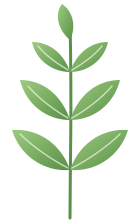
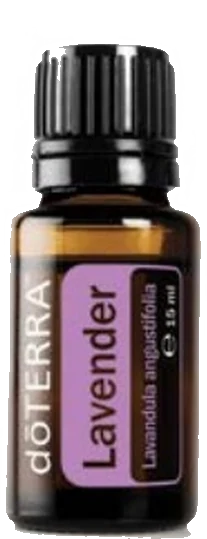
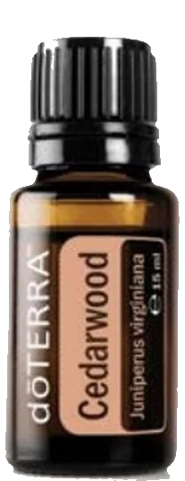
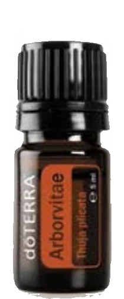
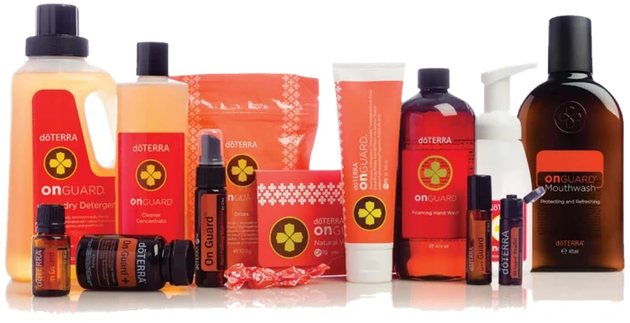
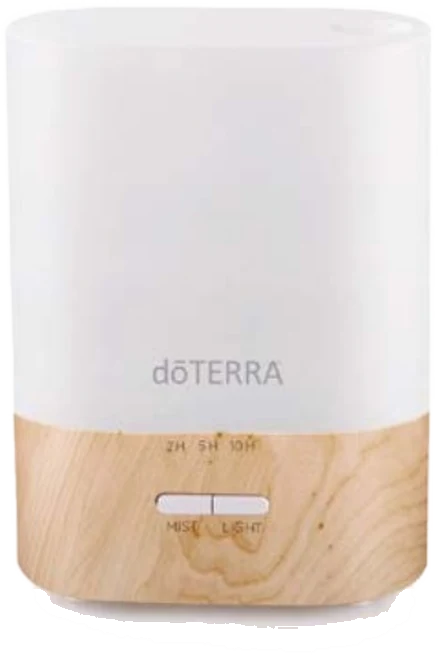

Капка грижа всеки ден
Здравейте, аз съм Петя.
Ще ви помогна да откриете етеричните масла.
Не е нужно да разбирате от масла. Кажете ми какво търсите и ще ви предложа с какво да започнете, как да го използвате и как да го поръчате на по-добра цена.




подарък5 малки ритуалаБезплатен наръчник за начинаещи с етерични масла.Вземете наръчника → по-ниска ценаПазарувайте като членЦена за членове и точки за безплатни продукти. Показвам ви как.Как става →
по-ниска ценаПазарувайте като членЦена за членове и точки за безплатни продукти. Показвам ви как.Как става →
моят избор
Любимите масла на Петя


Пазарувайте по продуктова линия
Целият каталог →


Пазарувайте по повод
започнете оттук
Не знаете кое масло да изберете?
Отговорете на 4 кратки въпроса и ще ви предложа 3 продукта, подходящи за вас. Отнема по-малко от минута.
Готови комплекти
Всички комплекти →Подбрах ги така, че да работят добре заедно. Можете да ги поръчате наведнъж с моя линк.


вечер
Спокойна вечер
Меки, топли аромати за спокойния край на деня. Дифузерът създава уют, докато четете или се приготвяте за сън.
- Лавандула 15 ml
- dōTERRA Serenity™ 15 ml
- Кедрово дърво 15 ml
- Дифузер „Petal“


дом
Свеж дом
Чисти, цитрусови аромати за кухнята, хола и когато чакате гости.
- Citrus Bliss™ 15 ml
- Purify 15 ml
- Лимон 15 ml
- Дифузер "Lumo"
пазарувайте с мен
Цена за членове и подаръци за редовни поръчки
Като член на dōTERRA плащате по-ниска цена от тази на дребно, а с програмата за лоялност трупате точки за безплатни продукти. Няма задължение да продавате. Ще ви помогна с регистрацията и първата поръчка.
- По-ниска ценаза всички продукти
- Точки и подаръципри редовни поръчки
- Лична помощот мен, преди и след покупката
Какво казват клиентите
Отзив от клиент 1: 1–3 изречения с нейни думи.
Отзив от клиент 2: 1–3 изречения с нейни думи.
Отзив от клиент 3: 1–3 изречения с нейни думи.
Безплатен наръчник
5 малки ритуала с етерични масла
Кратък PDF наръчник: как се използват маслата безопасно, 5 лесни ритуала за сутрин, вечер и дома, и с кои 3 масла е добре да започнете.
Новини и малки ритуали
Всички публикации →пример Работилница: аромати за домаПокана за среща, на която ще опитаме различни масла и ще направим собствена ароматна смес.
Целият каталог
Всички 216 продукта →

 Етерични маслаЕдинични масла, смеси, рол-он формати и комплекти за начинаещи и напреднали.120 продукта
Етерични маслаЕдинични масла, смеси, рол-он формати и комплекти за начинаещи и напреднали.120 продукта


Продуктови линииСерии, изградени около една смес: от етеричното масло до продукти за дома и тялото.32 продукта
 Грижа за кожата, косата и тялотоКозметика с етерични масла: лице, тяло, коса и лична хигиена.32 продукта
Грижа за кожата, косата и тялотоКозметика с етерични масла: лице, тяло, коса и лична хигиена.32 продукта
 Хранителни добавкиЕжедневни комплекси, добавки за храносмилането, за жени и за деца.25 продукта
Хранителни добавкиЕжедневни комплекси, добавки за храносмилането, за жени и за деца.25 продукта


Дифузери и основни продуктиДифузери, базово кокосово масло, капсули и други помощни продукти.7 продукта